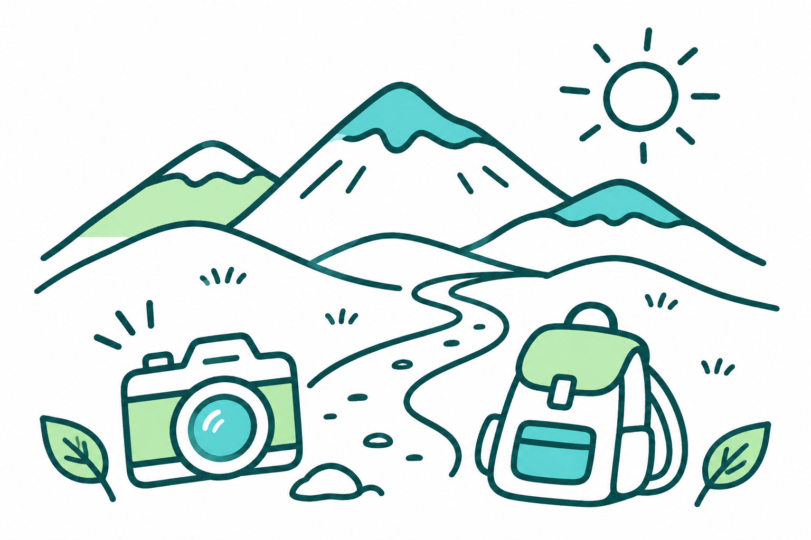

Hong Kong
My routes include the MacLehose Trail (Sections 1–10), the Lantau Trail, Sunset Peak, Dragon’s Back, Cape D’Aguilar, and Tai Mo Shan. I love how quickly the city gives way to open ridges, quiet coastlines, and a completely different pace.
Hiking and photography are how I slow down, pay attention, and find joy outside research—from Hong Kong’s ridgelines to Singapore’s green trails and the extraordinary landscapes of the American Southwest.

My routes include the MacLehose Trail (Sections 1–10), the Lantau Trail, Sunset Peak, Dragon’s Back, Cape D’Aguilar, and Tai Mo Shan. I love how quickly the city gives way to open ridges, quiet coastlines, and a completely different pace.
The Southern Ridges and the route from Windsor Nature Park to MacRitchie Reservoir: green escapes, long walks, and time to notice the small details along the way.
Lake Powell, the Toadstool Hoodoos Trail, and Bryce Canyon made for an unforgettable stretch of hiking. Walking along an exposed, dry tributary bed of the Colorado River, I felt the different textures that wind and water had left in the rock. Beautiful weather, an abundance of things to look at, and a deep sense of gratitude.
Some days, happiness is simply walking through a landscape that leaves you in awe.
On the second day of the new year, we set out from Sunset Point and linked three trails: Rim Trail, Peek-A-Boo Loop, and Navajo Trail.
The Rim Trail had my favourite views, along with plenty of mud. Peek-A-Boo Loop felt like the easiest part of our route, taking us through rock arches and between canyon floor and ridge. The Navajo Trail was a spectacular, muddy uphill finish—at times, it was hard to pull our shoes free.
For me, it was absolutely worth it: demanding, beautiful, and a remarkable way to begin the year. These are memories of my own hike, rather than a current trail guide.